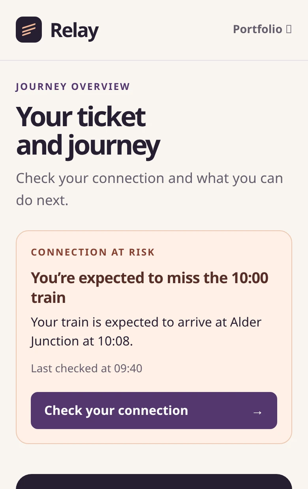
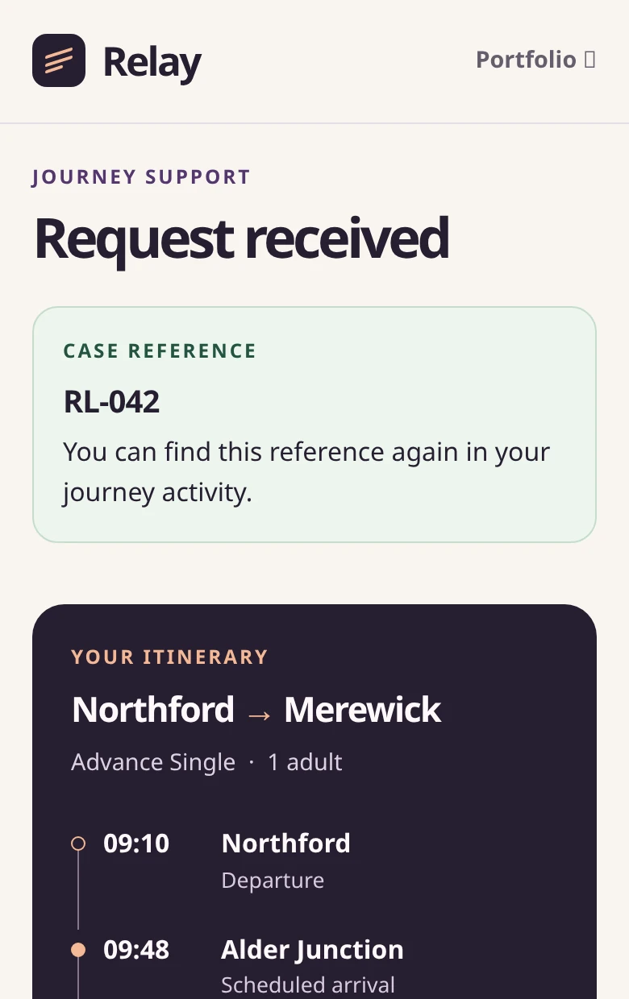

Relay · Service and conversation design
Designing for a missed connection.
A delay puts the next train out of reach. I designed a recovery journey that helps passengers understand their ticket options, keep their assistance needs visible and get help with the decision they face.
Try the interactive journeyThe problem
An alert leaves the hardest questions unanswered
The passenger’s train is expected at Alder Junction at 10:08. Their connection leaves at 10:00. Knowing about the delay still leaves them to work out which train accepts their ticket and whether they can get help changing platforms.
Design around the next decision
I scoped the working journey to one booked itinerary and mapped nine stages from disruption to recovery. The service blueprint identified the facts each decision needs, who supplies them and where the passenger must confirm an action.
The central design choice was to keep ticket acceptance and transfer assistance as separate answers. A valid ticket does not establish that assistance is available.
The recovery journey
Make the next step clear at each stage

Explain the impact
The alert names the affected connection and shows the arrival estimate and last-checked time. The passenger can see why the original plan is at risk.
View the Figma annotation
Keep uncertainty specific
The 10:30 accepts the ticket. Its transfer assistance can still be unconfirmed. Help stays attached to that train, preserving the decision the passenger has already made.
View the Figma annotation
Confirm the actual outcome
The passenger reviews the request before sending it. Pending, failed and received requests have distinct states. A case reference appears after the prototype confirms receipt.
View the Figma annotationConversation design
Carry the journey through the conversation
Screens support comparing trains and reviewing a choice. Conversation gives passengers a way to ask follow-up questions and explain connected needs. This example uses the web prototype’s unconfirmed-assistance scenario.
The booked journey gives the assistant a starting point. The passenger can ask about an alternative without restating the route.
The question contains a ticket decision and an assistance need. Both belong to the same recovery plan.
The known ticket result stays visible while assistance remains unresolved. The response gives each fact its own status.
The handoff preserves the unresolved need and gives the passenger control over sending the request.
Ask only for missing facts
In the Dialogflow CX build log, “Is the 12:10 to London delayed?” retained the time and destination. Relay then asked for the origin and journey date. I used a bounded status intent and required parameters to control when the lookup could proceed.
The structured state holds journey facts, passenger constraints, service results and unresolved needs. A missing service result stays unknown until a lookup supplies it.
Keep interpretation within its authority
The hybrid design reserves flexible interpretation for ambiguous or multi-intent messages. Structured service responses determine status, ticket acceptance and assistance availability. The broader generative interpretation path is still a design hypothesis.
I also defined a boundary for emotional signals. Expressed urgency or frustration can change acknowledgement, pacing and support options. Operational facts and action permissions stay grounded in the service response.
Make handoff a recoverable part of the journey
The support request carries the booking reference, affected connection, selected service and assistance need. A pending result asks the passenger to check its status. A failed result supports review and retry. A received request adds reference RL-042 to journey activity so it can be found again.
Saving a travel plan records the choice and preserves the existing ticket. The page confirms that limited action explicitly.
Evidence and evaluation
Test the recovery paths and the claims they make
- 6 of 6
- Scripted web paths passed in the recorded prototype checks.
- 4 of 4
- Local webhook checks passed in the earlier build record.
- 4 taps
- From ticket screen to saved 10:30 plan on the standard path.
The web checks cover a valid alternative, unconfirmed assistance, unavailable status, a changed option, a failed request with retry and a pending request. Local service checks cover the delay fixture, unavailable status, session isolation and an unsupported action.
These are prototype measures. Passenger outcomes and the revised Dialogflow CX integration remain unmeasured.
A failure that changed the design
The existing CX export returned the same delay answer for different journey inputs. It could demonstrate the route and parameter capture, but it could not establish a journey-specific service result. I used that finding to shape a webhook-backed design with an explicit unavailable state. A local mock supplies separate ticket and assistance decisions.
View the next conversation evaluation
These are proposed checks for the broader conversational flow.
- Context and correction
- Supply a time and destination, then change one detail. Ask only for necessary gaps and invalidate results tied to the old journey.
- Multiple intents
- Keep the connection, ticket and assistance questions together. Resolve the supported parts and retain each unresolved need.
- Unavailable or conflicting facts
- State what cannot be confirmed and offer a supported next step. Avoid guessing service status or ticket acceptance.
- Action and handoff
- Require confirmation, check the returned result and report pending or failed actions accurately. Carry the selected service into support.
I would treat invented ticket entitlement, an unapproved assistance change or a false completion claim as a critical failure.
Reflection
A useful answer preserves what is still unresolved
The strongest improvement was giving ticket acceptance and assistance their own states. That makes the remaining decision visible and lets the passenger ask for targeted help.
Next, I would run a moderated test of the recovery journey. I would measure whether passengers choose a valid next step without prompting, how long that takes, and whether they can explain what remains uncertain. The emotional map identifies possible moments of hesitation for that research.